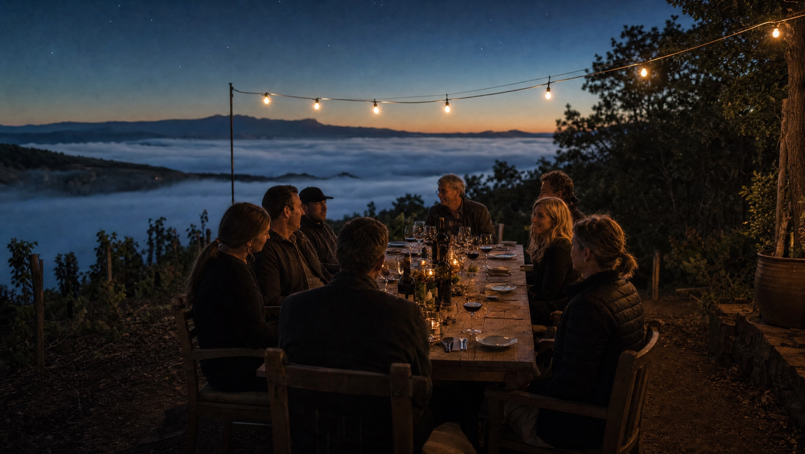
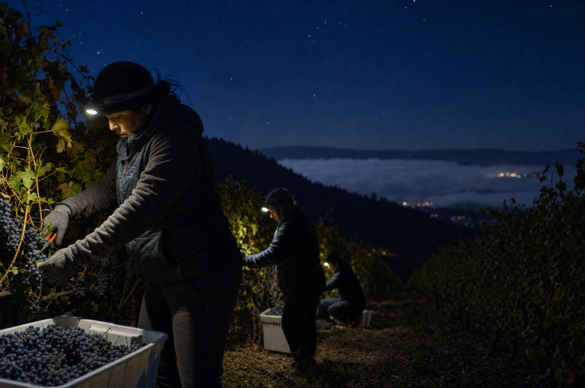

Stay for the dark.
A seated tasting at the edge of the field, beginning at last light. You taste the range in the place it comes from, in the order the day made it: Daybreak first, Long Exposure as the stars arrive.
Certain sessions follow the sky. A meteor shower. A dark-moon night. The telescope is Marne's own, and it is always pointed at something.

Spring through harvest, from last light until the cold sends us in. Sky sessions are scheduled by the calendar itself.
The full range, poured slowly, with food from the field kitchen between flights. About two and a half hours.
Each session opens to the Circle before anyone else. Remaining seats are released by the almanac.
"You taste differently in the dark. The glass gets quieter, and so does everyone at the table."
MARNE OKAFOR